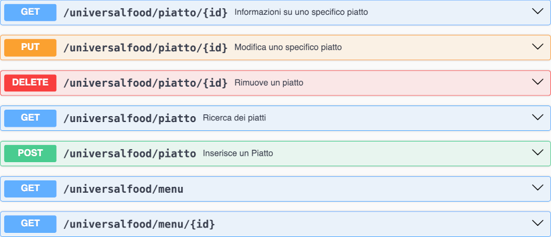
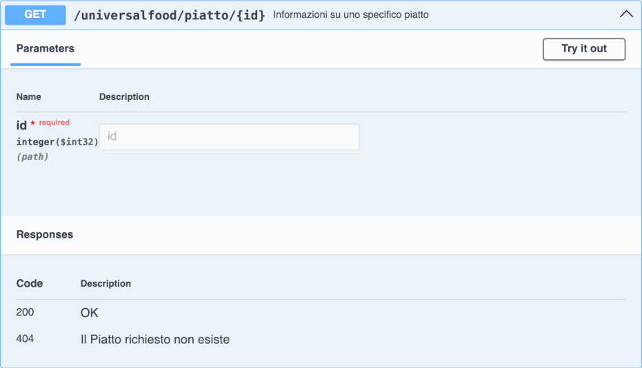

Utilizzare API di un server remoto
Come esempio di applicazione lato client creiamo un gestore di un menu per il ristorante UniversalFood che serve piatti di diverse parti del mondo. Il ristorante ha diversi menù che si caratterizzano per la nazione che rappresentano, ogni menù contiene diversi piatti.
Per consentirci di sviluppare la prima applicazione client
con maggiore comodità usiamo un server che possiamo tenere sotto
controllo (cosa che invece non si può di solito fare con un server
reale). Il server può essere scaricato dal
repository del libro su GitHub e dopo il suo avvio
si può accedere ai suoi servizi dall'indirizzo
http://localhost:8180, da questa pagina si possono fare due cose:
- Esplorare le API, cosa che in qualche modo si può fare su qualsiasi servizio.
- Accedere al database, cosa che è impossibile su un server di API e che in effetti non è necessaria: non ci importa in genere come il server organizza i dati, questa volta possiamo soltanto per curiosare un po'.
I dati presenti nel server si resettano ad ogni suo avvio quindi nessun problema se il db lo roviniamo per sbaglio o se inseriamo dati inutili: basta riavviare il server chiudento la finestra e rilanciandolo.
API disponibile
La prima cosa da fare è curiosare nelle pagine dell'API, a prima vista potrebbe sembrare complessa ma consente di fare molte cose come ad esempio provare ad interagire con il server.
Prima di tutto guardiamo l'elenco degli end point:  nell'ordine di ciascun servizio vediamo: il metodo, la url e una brevissima descrizione, sulla destra c'è una freccia per aprire i dettagli. Come esempio proviamo a vedere l'enpoint /universalfood/piatto/{id} facendo click sulla freccia sulla destra.
 da qui facendo click sul pulsante "Try it out" è possibile inviare una richiesta al server e vedere cosa ci risponde, basta ad esempio scrivere "22" nel campo id e poi click sul palsante execute che è apparso dopo aver fatto click su "try it out".
Questo è il momento giusto per fare molti esperimenti, magari inserire dati usando un end point con metodo POST o fare ricerche.
Applicazione per consultare il menù
La prima applicazione che costruiamo serve a consultare il menù del ristorante: una casella di scelta mi permette di scegliere quale menù (quindi quale parte del mondo per come è organizzato il ristorante) mi interessa e dopo averlo selezionato mi mostra una tabella con tutti i piatti disponibili per quel menù.
L'applicazione Javascript è riportata qui sotto, ci soffermiamo
sulle parti che riguardano l'interazione con l'API pubblica di
UniversalFood. Tutto in realtà inizia da [7]: quando la
pagina viene caricata si chiama la funzione caricaMenu()
che serve appunto a caricare il select che contiene
l'elenco dei menù. La funzione asincrona [1] invia la richiesta
al server usando fetch() e una volta recuperato il
risultato lo decodifica usandoil metodo json()
della risposta ottenuta. Da questo punto in poi si prosegue
creando un elemento option per ogni elemento della risposta
(che sappiamo essere un vettore avengo guardato l'API).
L'approccio della funzione descritta sopra è un pochino troppo ottimistico:
e se qualcosa dovesse andar male?
Per questo la compilazione della tabella dei piatti in un menù
usa una strategia un pochino diversa: la funzione scelto()
viene chiamata quando l'utente sceglie un menù
come specificato in [8] ma questa usa un try [2] con il relativo
catch [6] che gestisce eventuali errori in comunicazione.
Anche la gestione delle riposta alla richiesta [3] per uno
specifico piatto verifica se tutto è andato bene con l'if [4].
Questa funzione a differenza della precedente genera una tabella
costruendo l'HTML come testo e inserendolo poi in un div
già presente nella pagina.
<!DOCTYPE html>
<html lang="it">
<head>
<meta charset="UTF-8">
<title>Menu interattivo</title>
<style>
table { border-collapse: collapse}
td { border: 1px solid gray ; padding: 0.5em }
#errore { color:red }
</style>
<script>
"use strict";
async function caricaMenu(){ // 1
let risposta = await fetch("http://localhost:8180/universalfood/menu");
let elencoMenu = await risposta.json();
console.log(elencoMenu);
for(let i=0;i<elencoMenu.length; i++){
let elemento = document.createElement("option");
elemento.value=elencoMenu[i].id;
elemento.innerText=elencoMenu[i].nome;
menu.appendChild(elemento);
}
}
async function scelto(){
try{ // 2
let id=menu.value;
// id=75; da mettere per causare un errore
let risposta = await fetch("http://localhost:8180/universalfood/menu/"+id); // 3
if(risposta.ok){ // 4
let menuScelto = await risposta.json();
nazione.innerText = menuScelto.nome;
descrizione.innerText = menuScelto.descrizione;
let tabella="<table>";
for(let i=0; i<menuScelto.piatti.length; i++){
let piatto = menuScelto.piatti[i];
if(piatto.disponibile){
tabella += `<tr><td>${piatto.nome}</td><td>${piatto.descrizione}</td></tr>`;
}
}
tabella += "</table>";
dettagli.innerHTML = tabella;
}else{ // 5
errore.innerText='stato:'+risposta.status+" "+risposta.statusText;
}
}catch(e){ // 6
errore.innerText = e.message;
}
}
</script>
</head>
<body onload="caricaMenu()"> <!-- 7 !>
<h1>Universal Food</h1>
<p>Menù interattivo</p>
<p>Scegli un menu: <select id="menu" onchange="scelto()" ></select></p> <!-- 8 !>
<p>Nazione: <span id="nazione"></span></p>
<p>Descrizione: <span id="descrizione"></span></p>
<div id="dettagli"></div>
<p id="errore"></p>
</body>
</html>
Applicazione per inserire un piatto
Questa applicazione inserisce un piatto in un menù specifico, per questo è presente la stessa casella di scelta dell'esercizio precedente che consentirà all'utente di decidere in quale menù inserire il piatto.
Il pulsante [7] "invia nuovo piatto" chiama la funzione
inviaNuovoPiatto() che come prima cosa prepara
l'oggetto da inviare al server [2], in particolare questo oggetto ha una
proprietà "menu" che è a sua volta un oggetto di cui specifichiamo
il solo id (quello del menù scelto dall'utente).
In [3] creo una stringa con la rappresentazione JSON dell'oggetto appena definito,
subito sotto [4] preparo un oggetto con tutti i parametri della
richiesta da inviare al server, compreso il metodo "POST",
l'indicazione del formato application/json e la stringa JSON creata
(inserita nella proprietà "body").
La richiesta viene inviata [5] usando che URL base quella definita all'inizio del programma [1], questo può far comodo caso ad esempio cambi l'indirizzo del server e cosa molto più utile ci evita di scrivere lo stesso indirizzo tante volte. Una volta inviata la richiesta è importante vedere come è andata [6] per sapere se il dato è stato inserito o meno.
<!DOCTYPE html>
<html lang="en">
<head>
<meta charset="UTF-8">
<title>Menu interattivo</title>
<style>
table { border-collapse: collapse}
td { border: 1px solid gray ; padding: 0.5em }
</style>
<script>
"use strict";
const URL_SERVER = "http://localhost:8180/universalfood"; // 1
async function caricaMenu(){
let risposta = await fetch(URL_SERVER+"/menu");
let elencoMenu = await risposta.json();
console.log(elencoMenu);
for(let i=0;i<elencoMenu.length; i++){
let elemento = document.createElement("option");
elemento.value=elencoMenu[i].id;
elemento.innerText=elencoMenu[i].nome;
menu.appendChild(elemento);
}
}
async function inviaNuovoPiatto(){
let nuovoPiatto = { // 2
menu: {id: menu.value},
nome: document.getElementById("nome").value,
costo: document.getElementById("costo").value,
descrizione: document.getElementById("descrizione").value,
disponibile: true
};
let piattoJson = JSON.stringify(nuovoPiatto); // 3
console.log(piattoJson);
try{
let parametriRichiesta = { // 4
method: 'POST',
headers: {
'Content-Type': 'application/json'
},
body: piattoJson
};
let risposta = await fetch(URL_SERVER+"/piatto",parametriRichiesta); // 5
if(risposta.ok){ // 6
esito.innerText = "piatto inserito";
esito.style.color = "green";
} else {
esito.innerText = 'stato:'+risposta.status+" "+risposta.statusText;
esito.style.color = "red";
}
}catch(e){
esito.innerText = e.message;
esito.style.color = "red";
}
}
</script>
</head>
<body onload="caricaMenu()">
<h1>Universal Food</h1>
<p>Inserimento piatto</p>
<p>Scegli il menu per il nuovo piatto: <select id="menu" onchange="scelto()"></select></p>
<p>Nome: <input type="text" id="nome"></p>
<p>Costo: <input type="text" id="costo"></p>
<p>Descrizione: <input type="text" id="descrizione"></p>
<p><button type="button" onclick="inviaNuovoPiatto()">invia nuovo piatto</button></p> <!-- 7 !>
<p id="esito"></p>
</body>
</html>
Ulteriori funzionalità
La API di UniversalFood permette di svolgere ulteriori azioni che sono lasciate per esercizio.